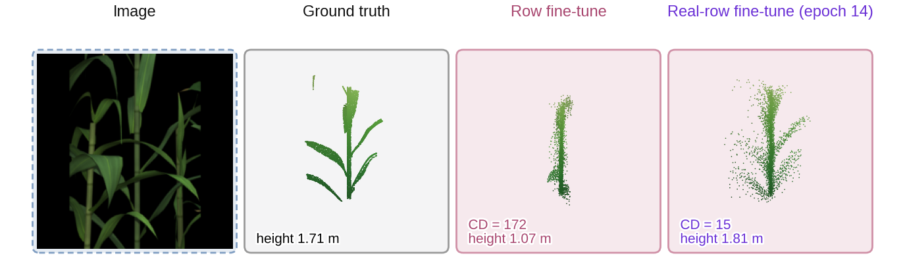
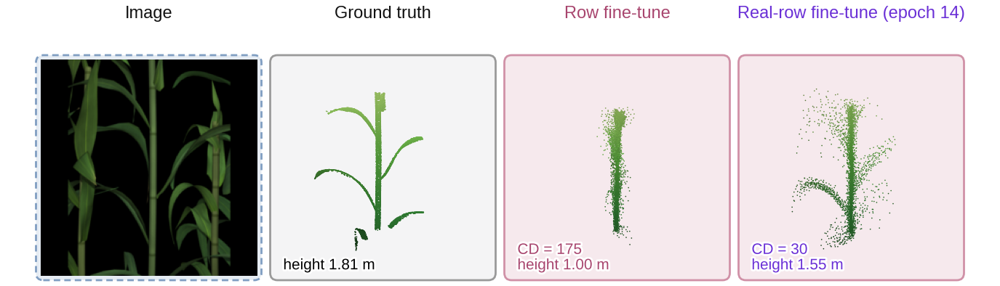
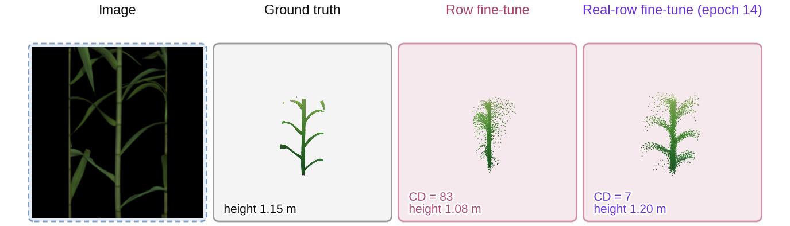
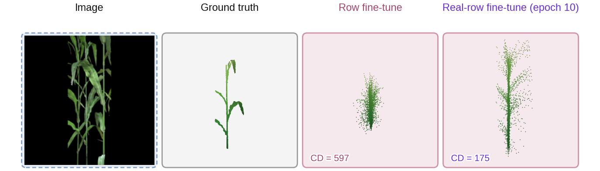
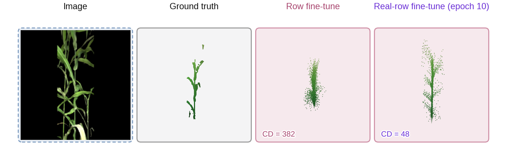
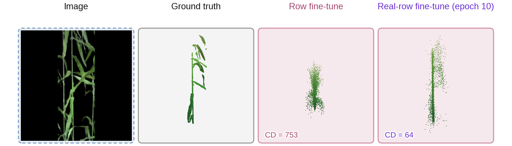

The 2026-11-13 upload: 3,000 rows per species built from the 520 scanned maize plants and 52 sorghum scans (with four tilted copies each), 18 camera stops per row; split by plant, 75 % for fine-tuning. Maize is also trained on the per-leaf parameters. Sorghum is shown zoomed (a square window of maize-like proportions centred on the middle plant's leaves) and trained with random zoomed crops; its Chamfer is on that window, so it is not comparable with the full-strip runs or with the first upload's numbers above. All numbers here are interim: validation every epoch, and test examples from the current best checkpoint.
| Species | Run | Epochs done | Val CD at start | Best val CD | at epoch |
|---|---|---|---|---|---|
| Maize | 15 epochs | 14 / 15 | 95 | 22.3 | 14 |
| Maize | 40 epochs | 13 / 40 | 95 | 21.8 | 13 |
| Sorghum | full strip, 15 epochs | 4 / 15 | 2,040 | 108.4 | 2 |
| Sorghum | full strip, 40 epochs | 6 / 40 | 2,040 | 111.8 | 2 |
| Sorghum | zoom + crops, 15 epochs | 6 / 15 | 606 | 74.9 | 5 |
| Sorghum | zoom + crops, 40 epochs | 10 / 40 | 606 | 68.7 | 10 |
Zero-shot on the held-out test plants (all streams, CD 10⁻⁴ m²): maize headline model 117, isolated-plant control 119; sorghum on the zoomed window: headline 547, isolated-plant control 391, row fine-tune 556.





